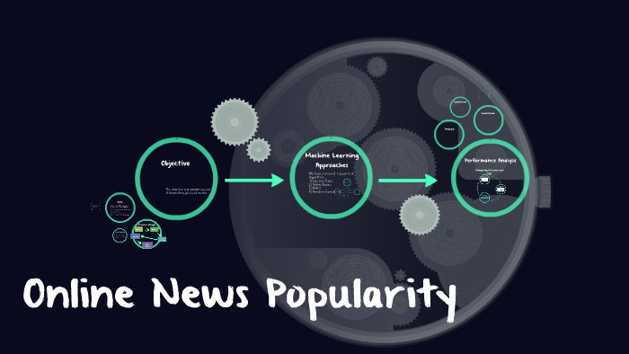

This project involved the creation and implementation of three dynamic dashboards, utilizing Tableau, to analyze and compare the content libraries of Netflix and Amazon Prime. It encompassed an extensive dataset, with 6,234 titles from Netflix and 9,668 from Amazon Prime. The analysis included a genre and geographic breakdown of Netflix's content, revealing a predominance of movies (68%) over TV shows, primarily targeting the U.S. market. Similarly, Amazon Prime's content was evaluated, highlighting a significant emphasis on movies (81%) and the U.S. as a major market. These dashboards provided valuable insights into streaming content trends and patterns, serving as a powerful tool for strategic decision-making.

The "Online News Popularity Analysis" project, conducted from October to November 2023, was a comprehensive endeavor that involved the analysis of 30,000 online news articles. By employing machine learning techniques, the project was able to categorize each article based on the sentiment expressed within—identifying them as either positive, negative, or neutral. A significant aspect of the study was examining the key factors that contribute to the popularity of a news article, which was achieved through principal component analysis. Furthermore, the project culminated in the design of a predictive model that boasts an impressive 84% accuracy rate in forecasting the popularity of online news publications, providing valuable insights into the dynamics of news article engagement.

The "YouTube Analytics: Analyzing Trending YouTube Videos with AWS & Power BI" project, was a deep dive into the realm of social media trends and user engagement. This sophisticated analytical venture ingested a vast dataset containing over 320,000 records of YouTube Trending Video Statistics, sourced from various countries in both CSV and JSON formats, utilizing the Kaggle API to store the data in an AWS S3 bucket. Leveraging AWS Lambda, the project efficiently converted the files to the Parquet format to optimize data preparation. Further data transformation and consolidation were achieved through AWS Glue ETL jobs, which prepared and cataloged the datasets using Glue Crawler, making them readily accessible for querying with AWS Athena. The final phase of the project involved harnessing the power of Power BI to connect with AWS Athena, enabling intricate data visualization and analysis. The insights gleaned focused on critical engagement metrics and conducted cross-country comparisons of likes-to-views ratios, offering a granular view of what drives video popularity on YouTube.